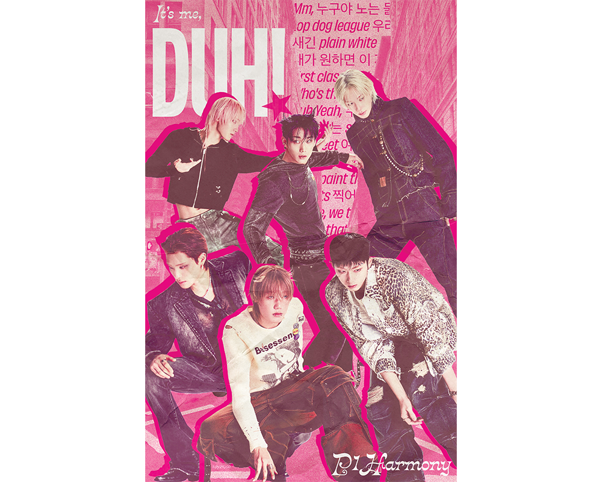
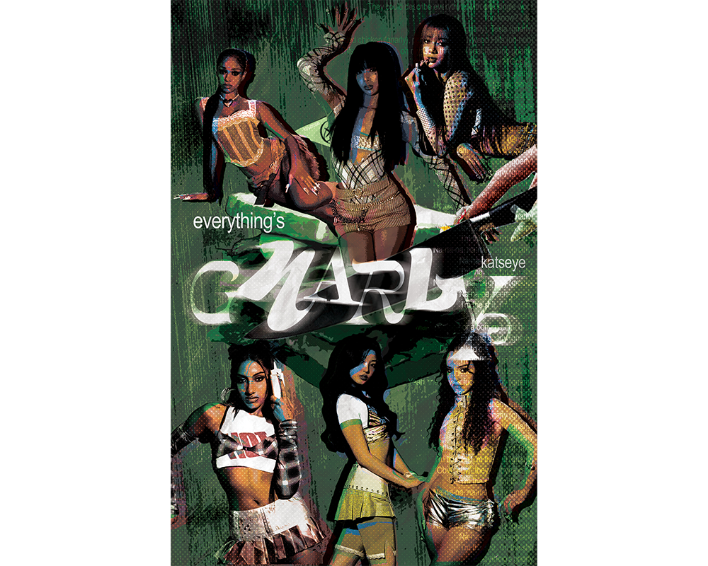
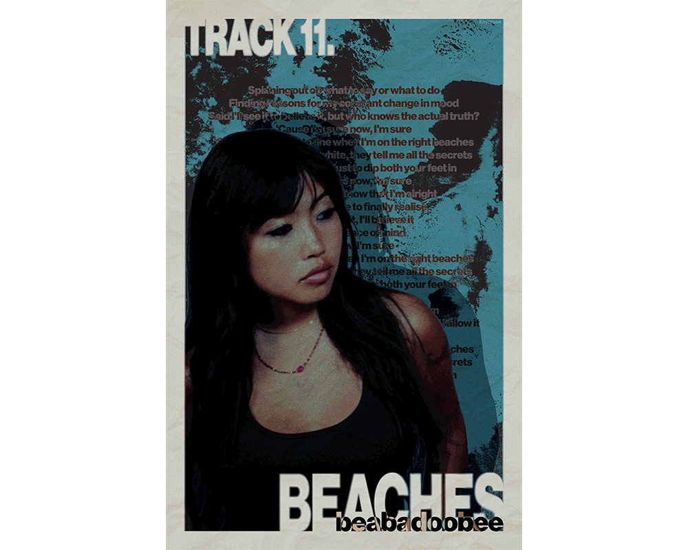
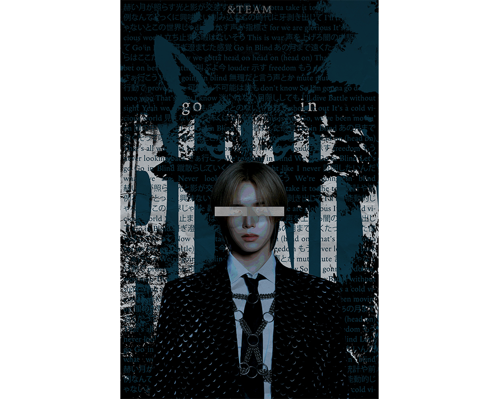

Music Posters
May 2025 (Ongoing)
- Photoshop
- Illustrator
I created a Redbubble account to share posters I've been creating in my free time.
To Redbubble Page




I created a Redbubble account to share posters I've been creating in my free time.
To Redbubble PageI love music. And, I love design. After taking Digital Survey I and II my freshman year and getting comfortable with Adobe Photoshop and Illustrator, I decided to build upon my skills while doing something I enjoy. So, since completing my first year of college, I have been designing posters digitally and selling them through Redbubble. I create posters based on my personal music taste, as well as any music artists that inspire me. Since launching my account, I have sold over 65 products and made over $130 in profit. I hope to continue creating music posters throughout college and beyond as a way to refine my skills and promote artists I admire.